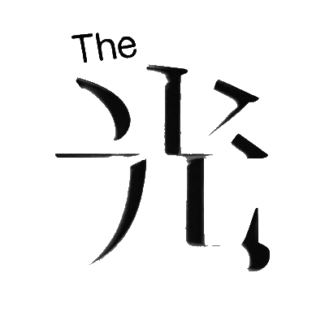

会場 | Venue
The 光 | The hikari
会期 | Date(s)
2017年8月13日(日) - 20日(日)
August 13 – August 20, 2017
13:00 - 20:00

August 13 – August 20, 2017
Open : 1 PM – 8 PM
会期 | Date(s)
2017年8月13日(日) - 20日(日)
August 13 – August 20, 2017
13:00 - 20:00